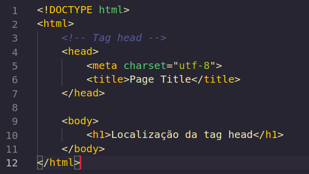

File Path - Caminho de arquivo. Contextualizando, o file path refere-se ao caminho necessário para que um arquivo possa ser acessado por uma página, como no exemplo abaixo.
| path | Descrição |
|---|---|
< img src="picture.jpg" > |
arquivo está localizado na mesma pasta que a página atual |
< img src="images/picture.jpg" > |
arquivo localizado na pasta chamada imagem, onde a pasta imagem está localizada na mesma pasta da página atual. |
< img src="/images/picture.jpg" > |
arquivo localizado na pasta imagem, pasta imagem localizada na pasta raiz do projeto. |
< img src="../picture.jpg" > |
arquivo localizado na pasta um nível acima da pasta atual |
Um caminho de arquivo absoluto é utilizado para acessar um arquivo na internet, por meio de uma url,
como no exemplo
abaixo:
< img src="https://www.w3schools.com/images/picture.jpg" >
Um Caminho de arquivo relativo é utilizado para acessar um arquivo que está localizado em uma pasta
relativa a página atual, como exemplo.
< img src="/images/picture.jpg" >
Uma boa prática é utilizar sempre que possível o caminho de arquivo relativo.
Apresentação da utilização do file path em projetos reais. Levarei em consideração a arvore de
diretórios abaixo,
para que os exemplo possa ser apresentados
Contextualizando, a tag head é utilizada para carregar os metadados da página e definir informações que serão importantes para motores de buscas, e para o corpo do projeto. A tag é localizada dentro da tag html antes da tag body, como na imagem abaixo.
Abaixo irei listar exemplos de metadados:
| Tag | Descrição |
|---|---|
< title > |
Refere-se ao título da página |
< style > |
Refere-se a estilização da página |
< meta > |
Refere-se a informações sobre a página, informações que serão utilizados pelos motores de busca. |
< link > |
utilizado para referenciar folhas de estilo externas |
< script > |
Define o script no lado do cliente |
< base > |
Define uma url como base para os caminhos relativos. |
Vamos construir uma página, tentaremos fazer com que esta página seja encontrada de pelos navegadores.
Contextualizando, layout é utilizado para organizar o conteúdo da página se forma semântica. o HTML5 possui elementos semânticos que definem partes de uma página, como no exemplo abaixo.
| Tag | Descrição |
|---|---|
< header > |
Define um cabeçalho para o documento ou section |
< nav > |
Define um container para navegação de links |
< section > |
Define uma seção no documento |
< article > |
Define um container artigo independente |
< aside > |
Define conteúdo alternativo a página |
< footer > |
Define um rodapé para o documento ou página |
< details > |
Define detalhes adicionais |
< summary > |
Define um cabeçalho para o elemento <details> |
A organização do layout de uma página é muito importante, não apenas para pessoas que irão utilizar-lo, mas também para motores de busca, pois uma página bem organizada facilita a busca por algum item específico. Como exemplo vamos utilizar a tag div, a tag div é utilizada muito, as vezes de forma discriminada, isso faz com que os motores de busca quando forem buscar uma área de navegação por exemplo tenha dificuldades em encontrar, isso seria facilmente resolvido com a utilização da tag nav.
Podemos organizar uma página com o auxílio do CSS de forma simples, bastando para isso o conhecimento de uma das técnicas abaixo.
Muito utilizado antes que houvesse formas mais elaboradas de construir um design, hoje porém é é uma má prática fazer o design de uma página utilizando tables, pois o table foi desenvolvido com o objetivo de criar dados tabulados e não design de páginas.
a propriedade float é simples de se utilizada, você só precisa entender como a propriedade funciona e aplicar em páginas, porém há desvantagem na propriedade float, pois os elementos que receberem essa propriedade estarão vinculados ao fluxo do documento, podendo muitas das vezes fazer com que o layout “quebre”, causando uma experiência ruim no usuário que utilizar a página.
Adicionado ao CSS3 a propriedade flexbox facilita a vida de desenvolvedores front-end, por meio da criação de um layout flexível, que pode se adaptar a tela do usuário. Desvantagem, não finciona corretamente no IE10.
Disponibiliza ao desenvolvedor front-end a capacidade de desenvolver páginas utilizando o conceito de linhas e colunas, sem a necessidade da utilização de flutuadores e posicionamento. Desvantagem, não funciona corretamente no IE.
Possui a proposta facilitar o desenvolvimento de páginas web, o mais famoso Framework CSS é o Bootstrap.